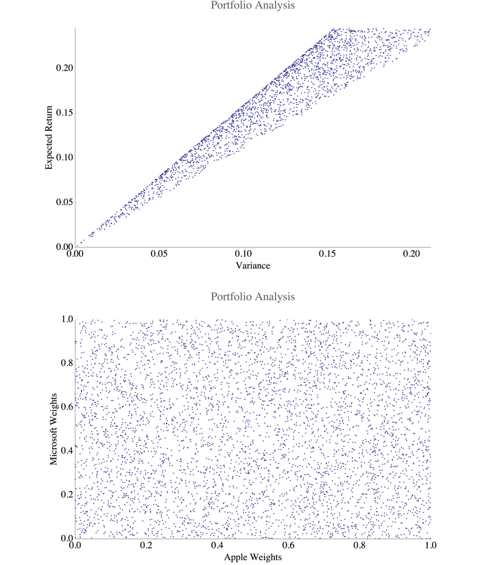

Mikhail Gaerlan 17 March 2017
A two-stock portfolio of Microsoft and Apple was analyzed in this project. The expected return of the portfolio was calculated by
$E(R _p)=\sum _i w _i E(r _i)$
and the variance was calculated by
$\sigma^2 _p=\sum _i w _i^2\sigma _i^2+\sum _i \sum _{j\neq i}w _i w _j\sigma _i\sigma _j\rho _{ij}$
where $\rho _{ij}$ is the correlation coefficient between the two stocks. The following result is the progression of the genetic algorithm converging on the efficient frontier.
